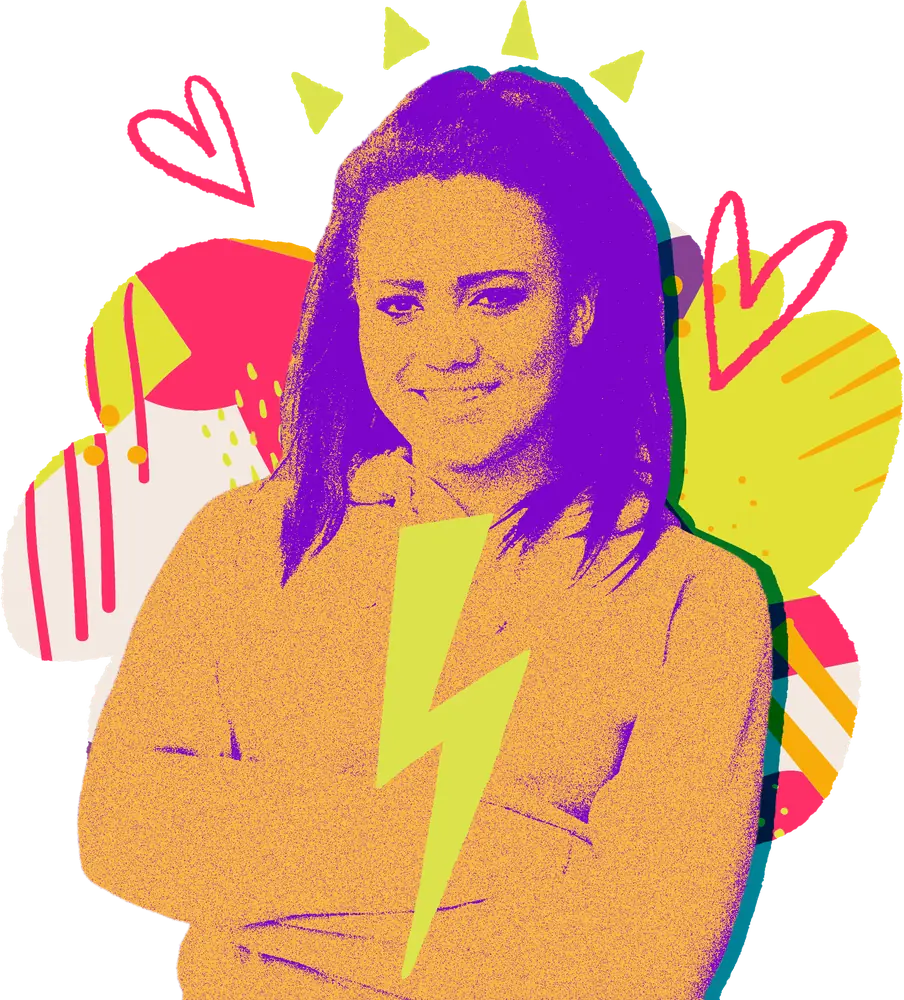
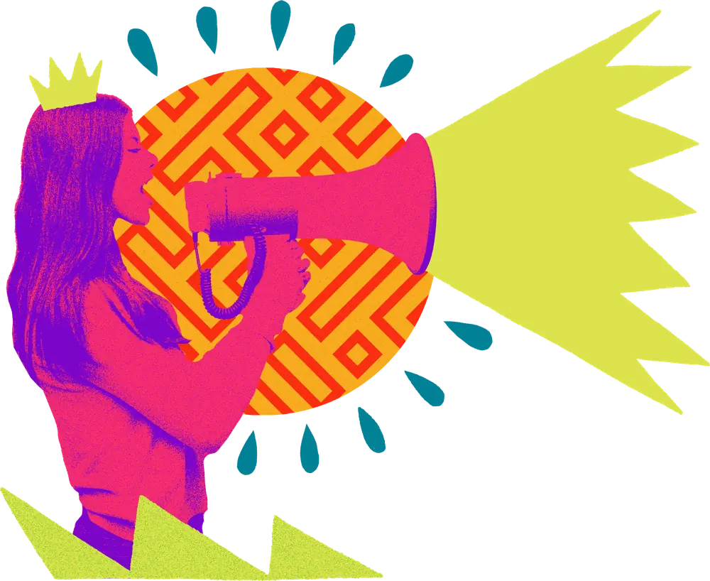
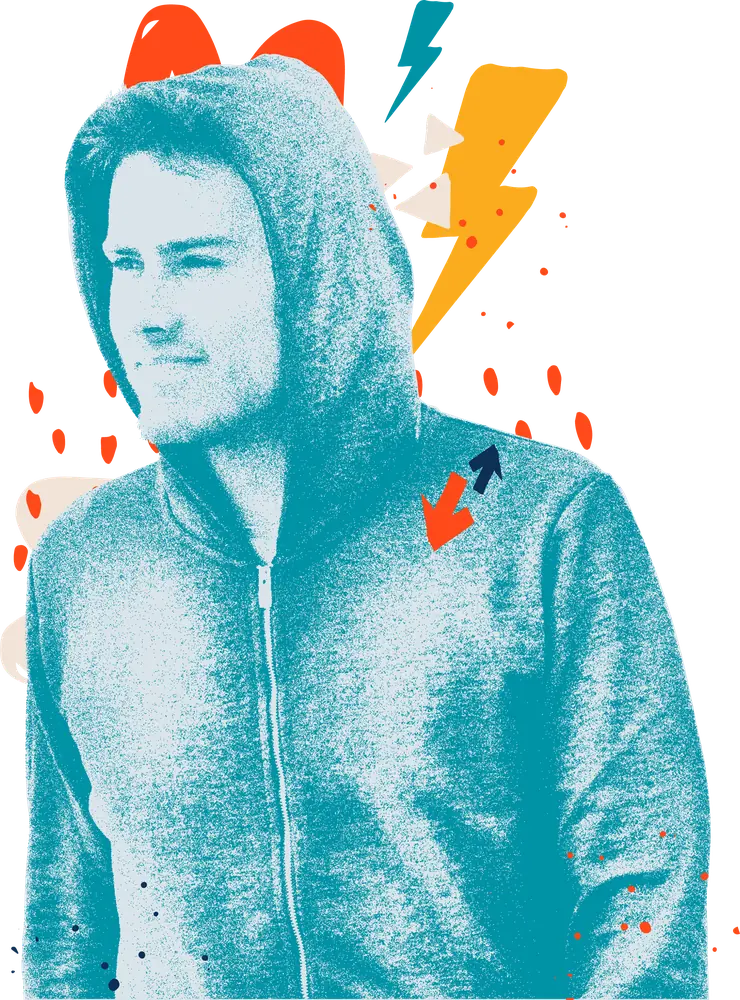

Children’s services consultancy, co-designed with the people it affects.
Most councils we work with already know something needs to change. What they need is help finding out exactly what, from the children, families and staff who live with it, and then help making the change stick. Since 2017 we’ve done that on 40 projects, for 36 local authorities and for national bodies including the Department for Education. Our consultancy covers five areas.




Transformation and service design
A new duty lands, an inspection says something must change, or a model that worked five years ago doesn’t any more. We help you redesign the service: a shared vision written with staff and young people, a new service model with a business case, or a consultation that hears from everyone the change affects.
Example work: Durham’s Families First Partnership consultation with over 475 people, Bridge and Beyond with NHS Staffordshire and Stoke-on-Trent, and Middlesbrough Children Matter.

Fostering
Too few foster carers are coming in, too many are leaving, and the new national standards require services to work in new ways. We led the national engagement on the rewrite of England’s fostering standards for the Department for Education. With our partner Why Care, we support councils to recruit, assess and support foster carers.
Example work: the Fostering National Minimum Standards for the DfE, and Why Care’s fostering work in Durham.

Participation and co-production
Most services say children’s voices shape their work. Fewer can point to a decision that changed because of them. We build participation that does: strategies and youth voice services designed with young people, national and regional consultations, youth peer research, and peer mentoring by care-experienced adults.
Example work: the South East Youth Participation Collective, and the Care Leavers National Movement.

Employment and pathways
Care leavers are more likely than their peers to be out of education, employment or training, and councils now have wider corporate parenting duties to change that. The Family Business helps a council act like a family business for its care leavers, with ring-fenced apprenticeships, local employers and a Skills Academy. We also build employer partnerships and local offers care leavers can actually use.
Example work: The Family Business in Suffolk and Kirklees, and employer engagement in Oxfordshire.


Practice approaches
When a child’s behaviour escalates, the adults around them often feel they have two options: back off or take control. Non-violent resistance (NVR) gives them a third, built on presence and relationships instead of escalation. We train and embed NVR with residential staff, foster carers, and early help and family workers.
Example work: 120 staff across 11 children’s homes in Durham.


How a commission works
Most commissions follow the same five steps.
1. A conversation
Tell us what’s happening in your service. We’ll say honestly whether we’re the right people to help, and if we’re not, who might be.
2. A short diagnostic
We listen to your staff and your young people and look at the evidence you already hold. Then we tell you what we see, including the parts that are uncomfortable to hear.
3. A clear brief
We agree named outcomes, a timeline and a price before any work starts. You know what you’re paying for and what will be different at the end.
4. The work, done together
We co-produce with your people and your young people. You get progress reports throughout, so problems are raised early rather than found at the end.
5. A clean handover
We build everything so your teams can run it without us. When we leave, the work carries on.